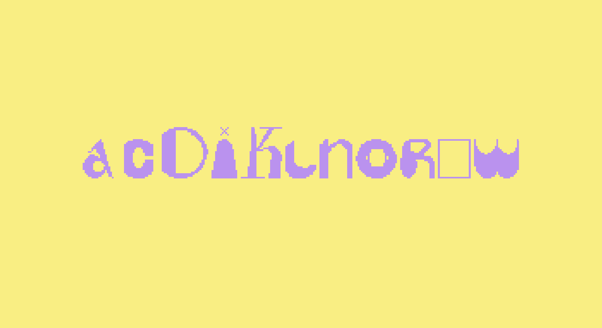
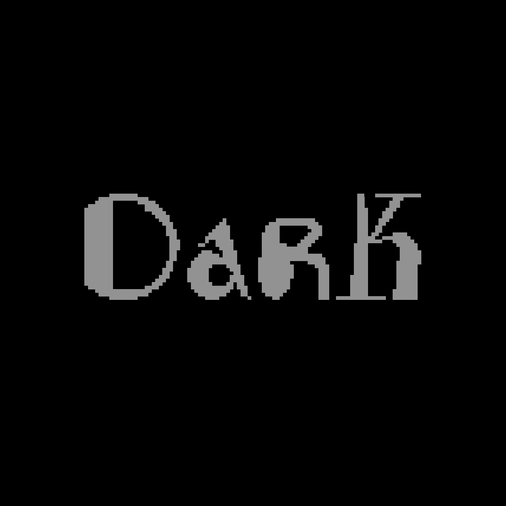
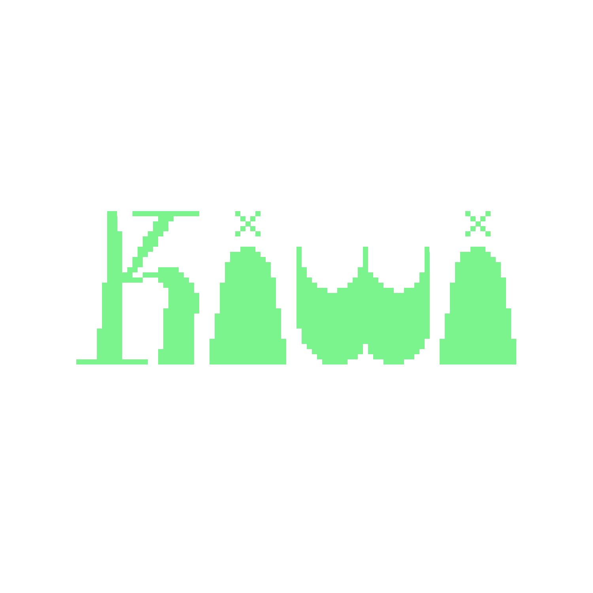
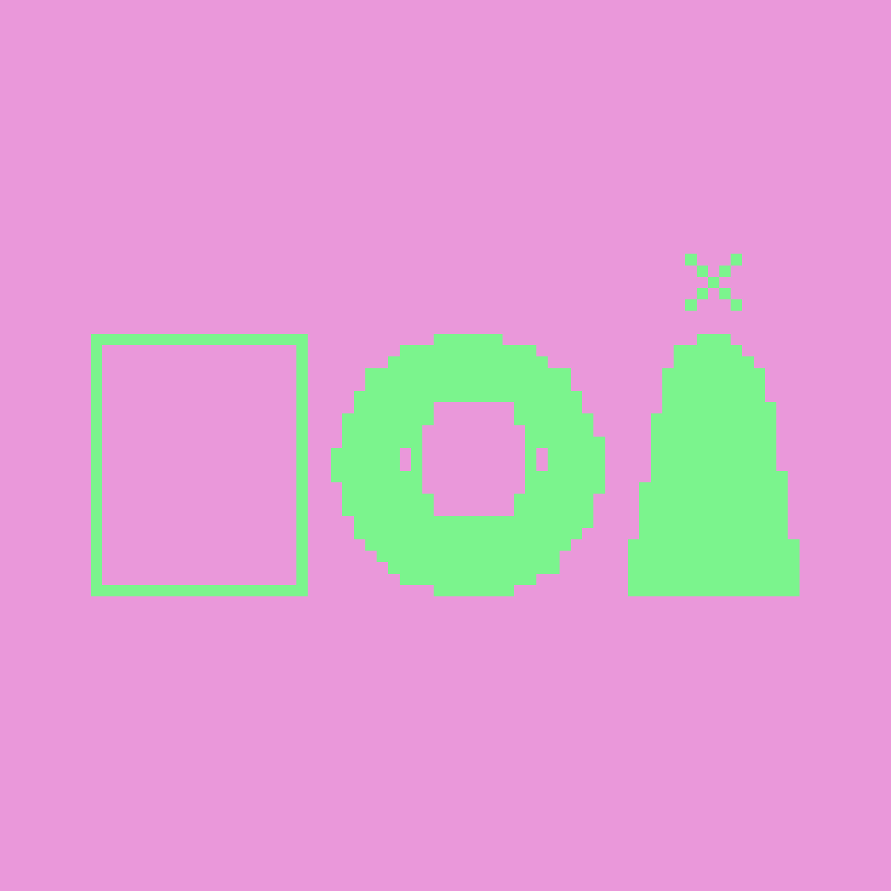

Mégafont
Workshop font variable, Expérimentation Typographique
2022
Workshop d’initiation au logiciel Glyphs et à la création de fontes variables avec Hugo Jourdan. Les lettres créées devaient se développer sur 3 masters et suivre une grille orthonormée «de pixel». Sur certaine lettre j’ai expérimenté sur la modification/l’expansion des différents éléments d’une lettre, cherchant à jouer avec la limite entre sa lisibilité et sa transformation en une forme abstraite





